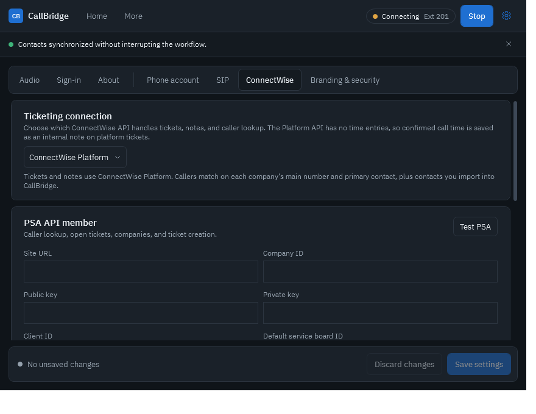
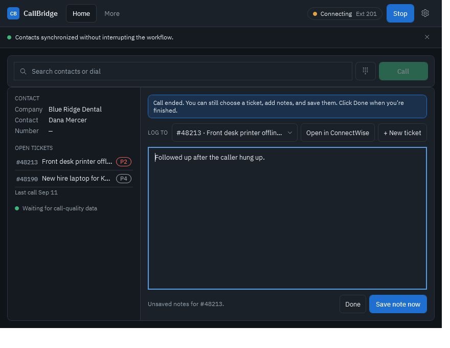
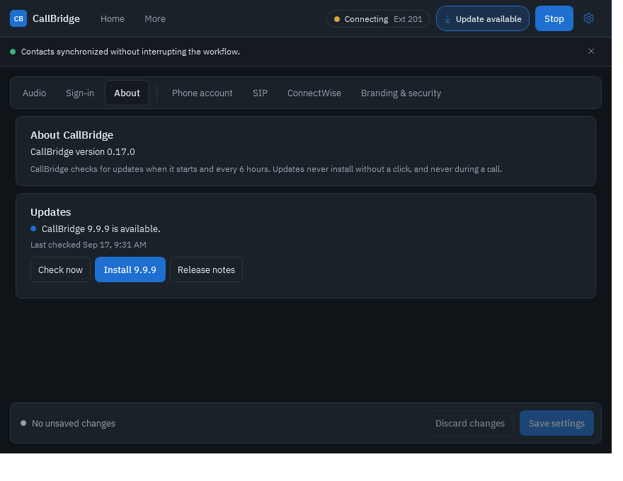

Quick start guide
Set up CallBridge in about 10 minutes.
Follow these steps in order. Steps marked Admin are done once per computer by whoever manages your phone system and ConnectWise. Steps marked Everyone are for each technician.
Before you start
Have these ready. Your phone provider and ConnectWise admin can give you anything you don't have.
| What | Where to get it | Needed for |
|---|---|---|
| Extension number | Your phone system (for example 101) | Phone |
| SIP server, username, password | Your phone provider or PBX admin | Phone |
| ConnectWise PSA API member keys | ConnectWise PSA → System → Members → API Members | PSA tickets |
| ConnectWise Platform client ID and secret | ConnectWise → Integrations → API Access | Platform tickets |
| Your ConnectWise member ID | The username you sign in to ConnectWise with | Time entries |
| A headset | Any USB, Bluetooth, or jack headset Windows recognizes | Calls |
CallBridge is not for emergency calls. It isn't approved for 911 or other emergency services. Keep another phone available.
1. Install Admin
- DownloadOpen the latest release and download
CallBridge-v….msi. - Run the installerDouble-click the MSI and approve the Windows admin prompt. CallBridge installs for everyone on the computer.
- Open CallBridgeUse the Start menu or the desktop shortcut. A blue CallBridge icon also appears in the system tray next to the clock.
Windows may warn you. The installer isn't code-signed yet, so SmartScreen can show "Windows protected your PC". Choose More info → Run anyway only if you downloaded it from the release page above. You can check the file against the SHA256 in the release notes:
Get-FileHash "$env:USERPROFILE\Downloads\CallBridge-v*.msi" -Algorithm SHA2562. Open Settings
Click the gear icon in the top-right corner of CallBridge. Settings has two groups of tabs:
| Tabs | Who uses them |
|---|---|
| Audio · Sign-in · About | Every technician |
| Phone account · SIP · ConnectWise · Branding & security | Admins. These lock behind an admin PIN once one is set. |
After changing anything, click Save settings at the bottom of the page.
3. Connect the phone account Admin
Phone account tab
| Field | What to enter |
|---|---|
| Provider | Choose Axion / HivePBX if you use HivePBX. It fills in the right transport, audio codecs, voicemail code, and park code for you. Otherwise choose Standard SIP. |
| Extension | Your extension, for example 101. |
| Outbound caller ID | Optional. The number customers see when you call out. Leave blank to use your phone system's default. |
| Voicemail access code | The code that reaches your voicemail. HivePBX: *97. |
| Park code | Parks a call in the next open slot. HivePBX: 4388. |
| Park slots | The slot numbers to watch, for example 4389 or 701-705. Enter slots only, not the park code. |
| Pickup prefix | Optional digits dialed before a slot to pick up a parked call. Leave blank for HivePBX (you dial the slot itself). |
SIP tab
| Field | What to enter |
|---|---|
| SIP server or domain | Your PBX address. For HivePBX this is your company's ….hivepbx.com address. |
| SIP username | Usually the same as your extension, for example 101. |
| SIP password | The extension's SIP secret (not your voicemail PIN). HivePBX hides it in the admin panel, so ask your provider if you don't have it. |
| Transport | What your provider supports. HivePBX: UDP (set for you). TLS is more secure when your provider offers it. |
| Codec profile | Leave the default unless your provider says otherwise. |
- SaveClick Save settings.
- RegisterClick Register in the top bar. The status pill turns green and shows your extension when the phone system accepts the login.
Your SIP password is stored encrypted for your Windows account only. It is never included in support bundles.
4. Connect ConnectWise Admin
Open the ConnectWise tab. First pick a Ticketing connection:
| Choice | Use it when | Time entries |
|---|---|---|
| ConnectWise PSA | You use ConnectWise PSA (Manage) with API member keys. Recommended today. | Real PSA time entries |
| ConnectWise Platform | You've moved to ConnectWise Platform and have OAuth API access. | Saved as an internal note on the ticket |
| Platform, with PSA contact lookup | You're moving from PSA to Platform. Tickets go to Platform; customer contacts still come from PSA for better caller matching. | Saved as an internal note on the ticket |

ConnectWise PSA
In ConnectWise PSA, create an API member for CallBridge:
- Create the memberSystem → Members → API Members → +. Give it a security role that can read companies, contacts, and service tickets, create tickets and notes, and create time entries.
- Generate keysOpen the member → API Keys → +. Copy the public and private key. The private key is only shown once.
- Find your board IDService → Setup Tables → Service Boards. Open the board new phone tickets should go to; the number at the end of the page address is its ID.
In CallBridge, fill in the PSA API member card:
| Field | Example |
|---|---|
| Site URL | na.myconnectwise.net (the address you sign in at) |
| Company ID | The company name you type on the ConnectWise sign-in page |
| Public key / Private key | From the API member you just created |
| Client ID | Your integration client ID from the ConnectWise Developer Network |
| Default service board ID | 27 |
Click Test PSA. You should see ConnectWise PSA authentication succeeded. Then click Save settings.
ConnectWise Platform
- Create API accessIn ConnectWise: Integrations → API Access → Generate Access. Select these scopes: Tickets – Read, Tickets – Create, Tickets – Update, and Companies – Read. Copy the client ID and secret.
- Enter the credentialsIn the ConnectWise Platform card, choose your region (North America, Europe, or Australia), then paste the OAuth client ID and client secret. The scopes are filled in for you.
- Test and saveClick Test Platform, then Save settings.
- Choose ticket defaultsClick Load boards and sources. Pick the Default service board and a Ticket source such as Phone, then Save settings again.
platform.tickets.read platform.tickets.create platform.tickets.update platform.companies.readWhat Platform can't do yet. ConnectWise's Platform API has no time entries, no contact search, and no ticket web links. CallBridge saves call time as an internal note, matches callers by each company's main number and primary contact (plus contacts you import), and shows the ticket number for you to open in ConnectWise.
ConnectWise RMM
CallBridge doesn't connect to ConnectWise RMM directly, and there is nothing to set up for it. Tickets that RMM creates in PSA or Platform, such as patching or device alerts, show up in the incoming call window like any other open ticket, so you still see them when that customer calls.
5. Load your customers Admin
CallBridge recognizes callers by matching their number against its directory. Fill it once, then again whenever you add customers.
- Sync ConnectWise contacts (ConnectWise tab) downloads every active contact that has a phone number. On Platform it downloads companies and their main numbers.
- Import CSV adds contacts from a spreadsheet, for example after-hours numbers or vendors.
- Add contact adds one person by hand.
Numbers match however they're formatted, so (732) 297-7575, 732-297-7575, and +17322977575 are the same caller.
6. Choose your headset Everyone
- Plug it in firstThen open Settings → Audio and click Refresh devices if it isn't listed.
- Pick devicesChoose your headset for Microphone and Speaker. Set Ringtone plays on to your computer speakers so you hear calls with the headset off.
- TestUse Test microphone, Test speaker, and Test ringtone, then save.
7. Add your member ID Everyone
Settings → Sign-in → Your member ID: enter the username you sign in to ConnectWise with. PSA time entries are logged under it. While you're there:
- Launch when I sign in to Windows starts CallBridge quietly in the tray so you never miss a call.
- Keep CallBridge on top during active calls keeps notes and call controls visible.
8. Protect admin settings Admin
Settings → Branding & security → Admin PIN. Enter 4 to 12 digits twice and click Set PIN. Technicians can still change audio and sign-in, but phone and ConnectWise settings need the PIN. While you're there you can set your logo and accent color.
9. Make a test call Everyone
- Check the status pillTop bar shows green with your extension.
- Call yourselfFrom a mobile phone, call your direct line or extension.
- Expect the pop-upThe incoming call window shows the caller and, if they're a customer, their company and open tickets. Click Answer.
- Try the controlsMute, Hold, then hang up. If you picked a ticket, a time entry draft appears. Check the minutes and click Save time.
Using CallBridge day to day
| To do this | Do this |
|---|---|
| Call someone | Type a name or number in Search contacts or dial on Home, then press Enter or Call. Or click the phone button on any recent call or contact. |
| Answer from anywhere | The incoming call window appears on top of other apps. Windows also shows a notification. |
| Take notes on a ticket | During a call, pick the ticket and type. Save note now saves immediately; unsaved notes are saved when you hang up. Each save adds a separate note. |
| Finish notes after the call | When the caller hangs up, the notes panel stays open. Choose a ticket, keep typing, save, then click Done. See Wrap-up. |
| Create a ticket | Click + New ticket during the call. For unknown callers, search for the company first. |
| Transfer | Transfer → enter the extension → Blind transfer, or Consult first to talk to them before handing off. |
| Park a call | Click Park. The Call parking card on Home shows which slot is busy. Click Pick up next to the slot, or dial the slot from any phone. |
| Check voicemail | The Voicemail card on Home shows new messages. Click Call to listen. |
| Log time | After a call with a ticket picked, adjust the minutes on the draft and click Save time. Drafts from back-to-back calls wait in order. |
| Hide CallBridge | Close the window. It keeps running in the tray and still rings. Right-click the tray icon to quit. |
Wrap-up: notes after the call ends
When the customer hangs up, CallBridge doesn't throw your work away. The notes panel stays open in wrap-up so you can finish writing up the call:
- Choose a ticket in LOG TO, or click + New ticket, even after the call has ended.
- Keep typing and click Save note now. Each save adds a separate internal note, and the box clears so your next note is its own entry.
- Click Done when you're finished. Wrap-up also closes as soon as the next call starts.
Notes you typed during the call are still saved automatically to the chosen ticket when the call ends. If you click Done with notes typed and no ticket chosen, they're copied to your clipboard so you can paste them somewhere.

Updates
CallBridge checks for updates when it starts and every 6 hours. When one is ready you'll see an Update available badge next to your extension. Click it, approve the Windows prompt, and CallBridge closes, updates, and can be reopened from the Start menu. It never updates during a call.
To check yourself: Settings → About → Check now, or Check for updates in the tray icon's pop-up.

Setup checklist
| Check | Looks like this when it works |
|---|---|
| Phone | Green status pill with your extension |
| ConnectWise | Test PSA or Test Platform reports success |
| Customers | Searching a customer's name on Home finds them |
| Headset | The microphone test hears you and the speaker test plays a tone |
| Voicemail | The Voicemail card shows a message count instead of Waiting for status |
| Parking | The Call parking card lists your slots |
| Test call | The pop-up shows the caller's company and open tickets |
Something not right? See Troubleshooting.